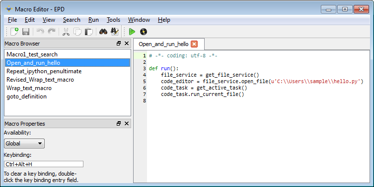

Macros are a quick way to customize and extend the EPD GUI. They can help you to automate tasks which are frequent or complicated.
Starting with the Record Macro command in the Tools menu, you can record a series of actions, then play the macro back when needed. Most user actions in the code editor are recordable like this, as are commands entered at the IPython prompt.
Every macro is saved as a Python script, so you can tweak it, or make its actions context-sensitive, just by editing its Python script. You can also write a macro from scratch. The Macro Editor window provides a convenient way to makes such changes.
For more information about writing and recording macros, see Recording, Editing, and Writing Macros.